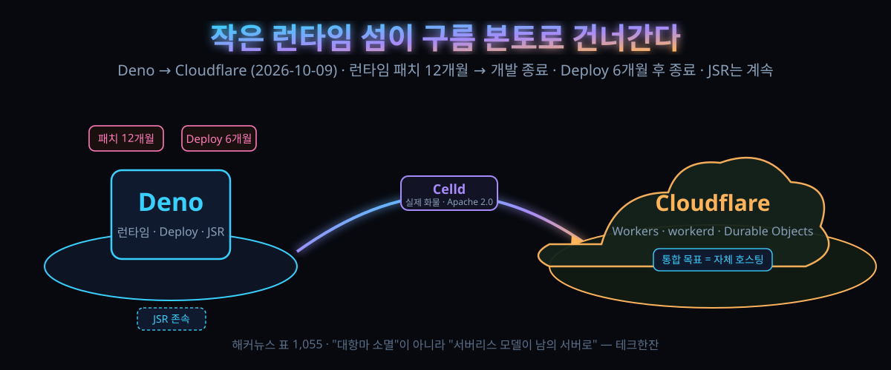

10/9 발표 — Deno 팀째 클라우드 회사로, 런타임 개발 종료 1년·호스팅 종료 6개월: JS로 서버 올리려는 사람이 지금 옮겨 둘 자리

결론부터: Deno라는 이름의 런타임은 시한부가 찍혔다. 12개월간 보안 패치만 받다가 개발이 멈추고, 호스팅은 6개월 뒤 문을 닫는다. 그런데 이 계약에서 살아남는 층이 있다. Cloudflare이 지난 8개월간 못 만들던 '남의 서버에서 돌아가는 서버리스'다. 합류의 실제 화물은 런타임이 아니라 그쪽이다.
10월 9일(현지 금요일), 라이언 딜 — Node.js의 공동 창업자이자 원저작자 — 이 자기 블로그에 글 하나를 올렸다. "Deno는 Cloudflare에 합류합니다." 팀 전원이 통째로 간다는 문장에 해커뉴스 표 1,055개, 댓글 118개가 붙었다.
JS 런타임 자리가 또 하나로 줄어드는 소식 그 이상이다. 이 발표 한 장에는 두 개의 뉴스가 겹쳐 있다. '대항마가 또 사라졌다'는 뉴스, 그리고 'Cloudflare 프로그래밍 모델이 남의 서버로도 돈다'는 뉴스. 아래에서 이 두 층을 떼어 읽는다.
30초 요약
| 항목 | 내용 |
|---|---|
| 무슨 일 | 10월 9일 발표. Deno(런타임+호스팅 회사) 팀 전원이 Cloudflare로 합류. 딜은 "별도 런타임과 호스팅 서비스를 계속 개발하는 대신 공통 플랫폼에 미래를 건다"고 밝혔다 |
| 종료 일정 | Deno 런타임: 12개월간 월 단위 릴리스로 버그·보안 수정만 제공, 이후 개발 종료(공개 저장소로 남고 제3자 개발은 환영). Deno Deploy: 6개월 뒤 종료, 유료 고객은 Workers 이전 지원 |
| 남는 것 | JSR(패키지 저장소)은 인프라를 Cloudflare으로 옮겨 계속 운영. rusty_v8(V8 바인딩) 지원도 계속, 목표는 workerd(Cloudflare의 오픈소스 런타임) 안으로 통합 |
| 진짜 화물 | 8월 공개된 Celld — Workers/Durable Objects 모델을 남의 인프라에서 돌리게 만든 오픈소스 재구현. Cloudflare 측 엔지니어는 "workerd의 자체 호스팅 생태계를 우리가 제대로 못 만들었다"고 인정했다 |
| 돈 얘기 | 거래 조건은 비공개. Deno는 그간 두 라운드에서 약 2,600만 달러를 모은 회사다 |
| 온도 | "내가 좋아한 그 런타임이라 더 슬프다"는 애도와 "이제 독립적인 JS 런타임이 손에 남는다"는 생태계 우려, 그리고 "노드 호환의 중력 구멍에 빨려 들어간 게 패인"이라는 내부를 밝힌 사람의 자성이 같은 스레드 |
1. 무엇이 터졌나
먼저 연표부터 놓자. 2009년 라이언 딜이 Node.js를 세상에 냈다. 2018년, 그는 자기 전작이 못마땅했던 지점 — 보안 경계와 의존성 관리 — 을 고치겠다며 Deno를 들고 나왔다. 한때 "후계자가 전작을 넘어서는" 각도로 읽히던 이야기였다. 2021년엔 Cloudflare이 실수로 Deno 웹사이트와 모듈 저장소를 차단한 적 있다(타입스크립트 파일을 영상 콘텐츠로 잘못 분류한 게 원인). Deno는 인프라를 다른 곳으로 옮겨야 했고, 두 회사 사이엔 그 뒤로도 서버리스 자리를 놓고 경쟁의 골이 패였다.
그런데 올해 8월, Deno가 Celld라는 프로젝트를 공개한다. 방향이 특이했다: 경쟁사를 베끼되 흠모를 숨기지 않는 방식이었다. 프로젝트 사이트에는 Workers 팀과 그 설계자를 명시적으로 감사 대상으로 올리는 문구가 실렸다 — "이렇게 좋은 원시 요소는 어디에서든 돌아야 마땅하다"는 취지의 헌사이자 러브레터라는 자기 소개였다. 자체 인프라에서 분산 애플리케이션을 Workers식으로 굴리겠다는 도구였다.
그리고 10월 9일, 그 8개월짜리 프로젝트가 계약을 설명하는 핵심 문장이 됐다. 딜의 발표문은 Deno → Deno Deploy → Celld로 이어지는 연장선 위에서 "단순화"라는 단어를 반복한다. 애플리케이션마다 자기 인프라를 조립하지 않아도 되는 세계 — 컴퓨트·저장·통신이 한 몸으로 움직이는 — 가 목표였고, 그 모델 자체를 기본값으로 만들려면 진영을 합치는 편이 빠르다는 판단이다.
Cloudflare 쪽 설명도 같은 자리를 가리킨다. Workers 팀의 켄톤 바르다는 공동 발표문에서 자체 호스팅 생태계 구축에 실행을 아꼈던 지난날을 인정했다("우리는 런타임을 풀어놓고 커뮤니티가 알아서 하길 막연히 바랐을 뿐"이라는 취지의 고백). 즉 이 계약은 정복이 아니라 서로 못 가진 조각의 맞교환으로 읽을 수 있다: Deno 쪽은 자체 호스팅 런타임의 개발자 경험이, Cloudflare 쪽은 그 경험의 설계도가 필요했다.
2. 왜 이런 계약이 성사됐나
① 내부자가 찍은 패인: "더 큰 문제를 못 풀게 호환성에 잡혔다"
댓글창에 본인임을 밝힌 인물이 남긴 자성이 이번 스레드에서 가장 많이 인용될 만했다. Deno는 잘 설계된 제품이지만 결국 자기 무게중심을 못 지켰다는 것이다. 노드와 똑같이 굴러야 한다는 요구에 끌려다니면서(Node.js와의 호환이 중요해졌고 실제로 호환성은 제품 로드맵의 큰 축이었다), 정작 자기가 푸려던 보안·의존성 문제는 차별점으로 남지 못했다. 런타임 전쟁의 종결 조건이 '더 나은 런타임'이 아니라 '이미 설치된 런타임'이었음을 조직이 인정한 순간으로 읽힌다. 실제로 Node.js 진영은 그 사이 권한 API(v20부터)와 타입스크립트 네이티브 실행처럼 Deno의 자랑거리였던 항목들을 차례로 들여놨고, 스레드에도 그 목록이 인용으로 붙었다.
② 돈의 크기가 계약의 크기를 설명하지 않는다
Deno는 통산 약 2,600만 달러를 모은 회사다. 반면 이 발표문 어디에도 매각가는 없다(조건 비공개). 즉 이 거래는 '비싸게 팔았다'는 뉴스가 아니라 '가장 싼 길을 골랐다'는 뉴스다. 런타임과 호스팅을 각각 유지하는 비용(런타임 두 개, 배포망 두 개)을 접고, Celld 하나에 올인하는 편이 남은 인생의 계산에 맞았다는 이야기다. 딜이 인터뷰에서 남긴 "열린 버전만은 이긴다"는 문장은 그 선택의 이념적 포장이고, 실제로 통합 프로젝트는 Celld의 Apache 2.0 라이선스 계보로 오픈소스 유지가 예상된다고 그는 밝혔다.
③ AI 에이전트가 이 계약의 새로운 수요처로 지목됐다
발표문 말미에서 딜은 AI를 이 기술의 대표 고객으로 찍는다. 지속적 상태·저비용 서버리스 실행·웹소켓·높은 자바스크립트 인터페이스라는 원시 요소들이 에이전트 하네스에 특히 들어맞는다는 것이다. 에이전트 하나 띄우마다 인프라를 조립하는 대신, 상태와 통신이 언어 모델 호출과 같은 층에 붙어 있는 모델 — 그것이 Workers 모델의 본령이고, 그 모델을 남의 서버에서도 돌리게 만드는 일이 앞으로 두 팀의 공동 업무다. 우리도 로컬 에이전트를 굴려 보는 사람이라면 '에이전트 하네스는 결국 상태 저장소 + 이벤트 루프 + 통신'이라는 이 구조가 왜 값나가는지 체감할 수 있을 것이다.
④ 2025년 12월의 선례와 결정적 차이
작년 12월 Anthropic이 Bun을 인수했을 때 런타임 생태계는 이미 한 번 요동쳤다. 그때와 이번의 차이는 명확하다: Bun은 인수 후에도 오픈소스 런타임으로 계속 개발된다는 약속이 붙었고, Deno 런타임은 12개월 뒤 개발 종료다. 같은 '인수'라도 런타임의 생사 여부가 갈렸다. 스레드의 생태계 우려("이제 독립 실행형 JS 런타임이 몇 안 남는다")는 여기서 나온다. io.js 때부터 반복돼 온 그림 — 대안은 결국 메인스트림에 흡수되고, 그 공헌은 메인스트림을 전진시킨다 — 라는 해석에도 댓글창의 상당수가 고개를 끄덕였다.
3. 지금 내 코드에 무슨 일이 일어나나
가장 실전적인 질문은 이거다: Deno로 무언가를 굴리고 있는 사람(회사 포함)은 이번 주에 뭘 해야 하나. 아래는 발표문이 공표한 일정과 공개 자료만으로 짠 분기표다.
| 내 상황 | 지금 할 일 | 판정 기준 |
|---|---|---|
| Deno Deploy에 올려 둔 서비스 | 종료 전 6개월 안에 이전 계획 확정. 유료 고객이면 공식 이전 지원 창구를 먼저 열어 둔다 | 6개월은 문서 작성·이전·검증에 충분한 듯 보이지만 유료 SLA가 걸린 서비스엔 짧은 기간이다. 즉시 재등록(Workers 또는 자기 서버) 중 하나를 고를 것 |
| 자기 서버에 Deno 바이너리로 배포 중 | 당장 급하지 않음. 12개월간 패치는 나온다. 다만 새 개발은 Node.js 또는 Bun으로 신규 모듈을 분리하는 연습 | 저장소는 공개로 남고 제3자 개발은 환영한다고 명시돼 있다. 포크·커뮤니티 유지 가능성을 12개월 안에 관찰할 것 |
| JSR에 패키지를 발행해 왔음 | 계정·발행 방식 점검. JSR은 종료 대상이 아니고 인프라만 Cloudflare로 옮겨 계속 운영된다고 발표문에 적힘 | 이전 기간 동안 발행 중단 공지 여부만 모니터링하면 됨 |
| Node.js 기반이고 이번 일과 무관 | 이주할 이유 없음. 오히려 Node에 이미 들어온 기능들(권한 게이트, TS 네이티브)을 써 볼 기회 | "Deno가 좋았는데"라는 감정과 "내 의존성 목록"은 별개다 |
| Cloudflare Workers 사용자 | 자체 호스팅 workerd의 생태계(인접 서비스·도구)가 이번 팀 합류의 수혜 후보. 단, 약속은 로드맵이고 오늘 시점의 사실은 아니다 | Durable Objects의 자체 호스팅 지원 여부가 관전 포인트 |
이주의 코드를 한 줄로 쓰면 이렇게 된다. Deno 코어 API(npm 스타일 의존성, 권한 플래그, 내장 테스트/린터)는 Node로 이식 가능한 범위가 넓어졌다 — Deno가 8년간 노드 쪽으로 걸어가 준 덕분이다. 반대로 Deno Deploy 전용 기능(에지 배포 그 자체)은 Workers API로 옮기는 작업이 필요하다. Celld 쪽 코드를 직접 만진 사람이라면, 통합 프로젝트가 Apache 2.0 계보로 열린 채 유지될 예정이라는 점을 계약서가 아니라 라이선스로 확인하는 편이 안전하다.
4. 해외 반응 쟁점
댓글 118개는 다섯 갈래로 갈렸다.
| 갈래 | 논지(스레드 분위기 요약) |
|---|---|
| 애도파 | "JS 런타임 중 압도적으로 좋아했다. 지난 8년간의 혁신은 끝났다. 최소한 workerd가 Deno의 보안 메커니즘은 채택하길" — 상실감이 가장 큰 목소리 |
| 안정도 파 | "적합한 둥지를 찾았다. landing 장소로 Cloudflare이 최선" — 팀의 지속성을 팀원 관점에서 보는 쪽. Celld의 방향성 자체는 대체로 환영 |
| 생태계 우려 | "Anthropic이 Bun을 품었고 Deno는 개발 종료. 독립 런타임이 손에 남는다" — 경쟁자 소멸이 사용자 이익으로 자동 환원되지 않는다는 논점 |
| 내부자 자성 | "노드 호환의 중력 well에 빨려 들어간 게 패인. 중요한 문제를 풀 수 있는 곳에 쓰이지 못했다"는 본인 표기 댓글. 프로젝트 애정의 반대편에서 나온 가장 정직한 진단 |
| 규제 논점 | "제품의 죽음을 문제 삼을 반독점 사건이 있던가" — 인수합병으로 경쟁 제품이 사라지는 관행에 대한 연쇄 토론. io.js 사례까지 소환되며 "대안은 죽고 그 피로 메인스트림이 자란다"는 정리로 수렴 |
5. 마시기 전 주의
첫째, 통합 로드맵은 아직 발표문의 미래형이다. Celld가 workerd와 '통합된다'는 표현이 실제 출시·지원 범위(특히 자체 호스팅 Durable Objects)를 보장하지는 않는다. 확정된 건 Deno 쪽 종료 일정 두 개뿐이다.
둘째, 12개월·6개월 카운트다운의 기산점은 발표문 기준으로 발표일 이후다. 사내 서비스에 적용할 때는 "연말까지"가 아니라 계약서 문구 기준으로 날짜를 다시 박아야 한다.
셋째, 거래 조건은 비공개다. "얼마에 팔렸나"를 전제로 한 평가(구조조정설 포함)는 이 글이 확인하지 못한 영역이고, 확인 가능한 수치라고는 2,600만 달러(기존 누적 투자)뿐이다.
넷째, 애도 댓글들은 사용자로서 유효한 신호지만 시장 전망은 아니다. 런타임 경쟁이 '기술 우수성'으로 결난 적이 한 번도 없다는 게 이 스레드가 아니라 과거 io.js·Bun 전례의 교훈이다. 이번 소식은 '좋은 런타임이 죽었다'가 아니라 '런타임이 제품으로서의 독립 생존에 실패했다'로 읽어야 정확하다.